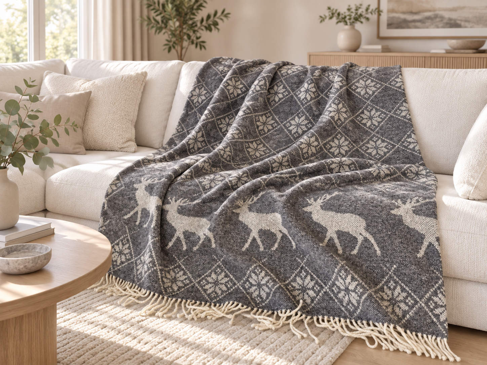
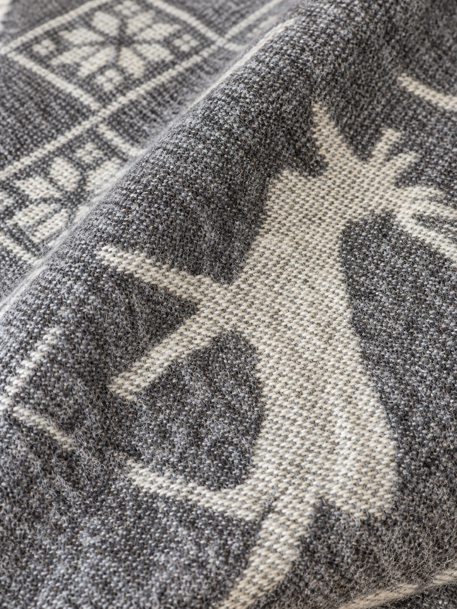
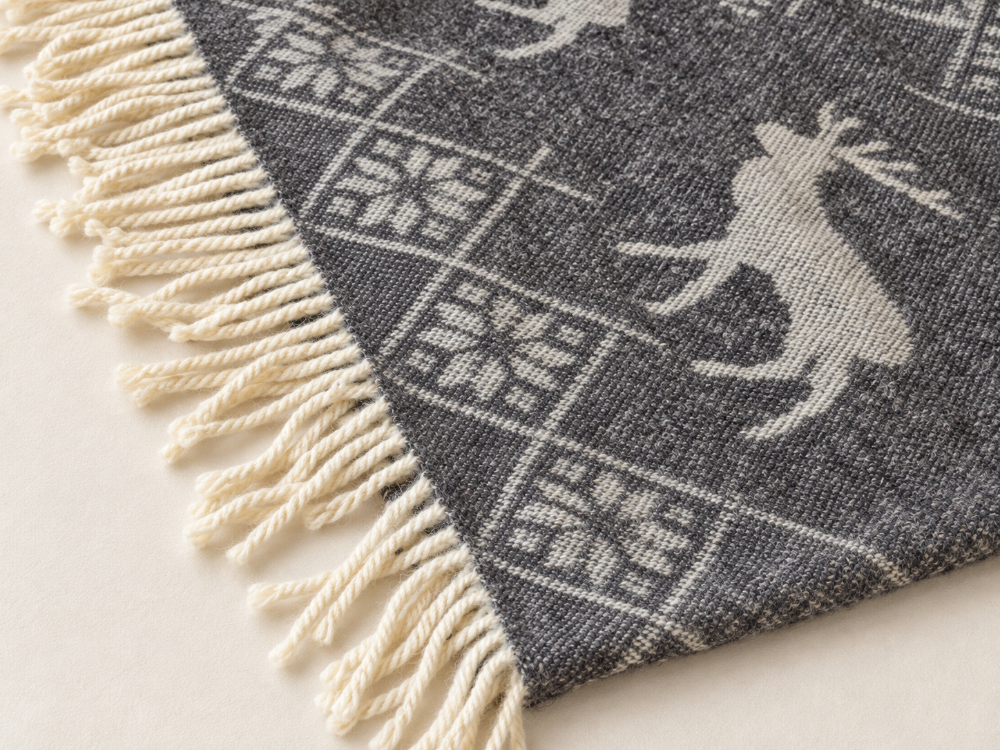

AI-assisted product campaign · Portfolio concept
A calm, tactile product story for a fictional Scandinavian-inspired home textile brand.

The brief
The brief was to introduce Fjord, a pure wool throw, through a campaign that feels premium without becoming cold or overly staged.
Because wool is highly tactile, the central challenge was preserving a believable natural texture throughout an AI-assisted visual workflow. Real product photography became the visual anchor; generated environments and careful editing created a cohesive setting around it.
Final film · 00:16



My contribution
Campaign copy